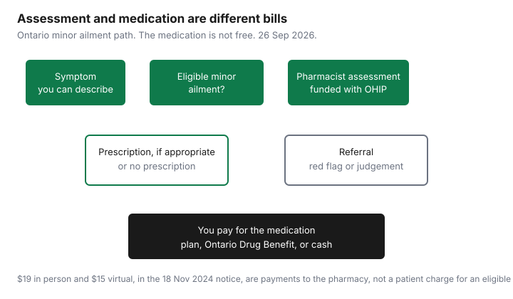

Healthcare · Canada
Pharmacist Prescribing for Minor Ailments in Ontario: Free Assessments That Save a Clinic Visit
An Ontario pharmacist can assess some everyday problems and, when it is appropriate, prescribe for them. For a person with a valid Ontario health number, the ministry describes that assessment as publicly funded. The capsule, cream, or eye drop is a different charge. People without a family doctor sometimes pay a walk-in clinic for a problem that now sits on this list, and they sometimes assume the medicine is free because the visit was. This page separates those two bills. It is not medical advice. A pharmacist who finds a red flag will send you on, and you should go. If you are unsure the symptom is minor, do not use this list to delay urgent care.
Key takeaways
- As of 1 July 2026, the Ontario Pharmacists Association lists 28 minor ailments pharmacists may assess and prescribe for. Nine of them were added that day. A proposed further set is not in force.
- A valid Ontario health number is what makes the assessment publicly funded. The Executive Officer notice effective 18 November 2024 says there is no cost to an eligible person, and that the pharmacy is paid $19 in person or $15 virtually. Those amounts are not your bill.
- The medication is paid through the Ontario Drug Benefit, a private plan, or cash. A dispensing fee can still apply. Renewing an old prescription is not this funded assessment.
- Virtual care is allowed when it is safe for that symptom. Not every pharmacy offers the service, and an appointment may be required.
- Alberta and Quebec lists were not opened in a form this draft can quote. British Columbia and Nova Scotia publish their own lists, which are not Ontario’s 28.
The 28 minor ailments Ontario pharmacists can assess and prescribe for (as of 1 Jul 2026)
The Ontario Pharmacists Association page, last updated 18 June 2026, says that effective 1 July 2026 pharmacists are authorized to assess and prescribe for 28 minor ailments, and that the publicly funded program includes all 28. The same page dates the earlier steps: 13 ailments on 1 January 2023, six more on 1 October 2023, and nine more on 1 July 2026. The Ontario College of Pharmacists page, updated 1 July 2026, names the nine additions: calluses and corns, dandruff (seborrheic dermatitis), dry eye, head lice, jock itch, mild tension-type headache, nasal congestion, ringworm, and warts excluding the face and genitals. Drugs that may be prescribed sit in Schedule 4 of Ontario Regulation 256/24 under the Pharmacy Act. The college’s quick reference, dated 28 May 2026, is the matching patient-facing list of all 28.
The association says further conditions have been proposed — otitis externa, insomnia, herpes zoster, acute pharyngitis, and onychomycosis — and that more work is required before they are implemented. They are not on the 1 July 2026 list. Do not ask a pharmacy to treat them as if the list already grew. Offering the service is a choice, not a duty of every pharmacy. The college says patients should ask what the pharmacy offers, whether an appointment is needed, and whether the service fits the symptom. A pharmacist who prescribes for a minor ailment must notify your primary care provider when you have one.
| Group | Ailment on the list | Added 1 July 2026? |
|---|---|---|
| Eyes | Conjunctivitis (bacterial, allergic, and viral) | No. Already in scope. |
| Eyes | Dry eye (xeropthalmia), spelled that way on the college and association lists | Yes |
| Nose and allergy | Allergic rhinitis | No. Already in scope. |
| Nose and allergy | Viral rhinitis or rhinosinusitis (nasal congestion) | Yes |
| Mouth | Cold sores (herpes labialis) | No. Already in scope. |
| Mouth | Canker sores (oral aphthae) | No. Already in scope. |
| Mouth | Oral thrush (candidal stomatitis) | No. Already in scope. |
| Skin | Mild acne | No. Already in scope. |
| Skin | Dermatitis (atopic, eczema, allergic, or contact) | No. Already in scope. |
| Skin | Diaper dermatitis | No. Already in scope. |
| Skin | Impetigo | No. Already in scope. |
| Skin | Dandruff (seborrheic dermatitis) | Yes |
| Skin | Ringworm (tinea corporis) | Yes |
| Skin | Jock itch (tinea cruris) | Yes |
| Skin | Calluses and corns | Yes |
| Skin | Insect bites and hives (urticaria) | No. Already in scope. |
| Skin | Tick bites, post-exposure prophylaxis to prevent Lyme disease | No. Already in scope. |
| Skin | Warts (verrucae), excluding face and genitals | Yes |
| Stomach, bowel, and bladder | Gastroesophageal reflux disease (GERD) | No. Already in scope. |
| Stomach, bowel, and bladder | Hemorrhoids | No. Already in scope. |
| Stomach, bowel, and bladder | Pinworms and threadworms | No. Already in scope. |
| Stomach, bowel, and bladder | Uncomplicated urinary tract infection | No. Already in scope. |
| Stomach, bowel, and bladder | Yeast infection (vulvovaginal candidiasis) | No. Already in scope. |
| Stomach, bowel, and bladder | Nausea and vomiting of pregnancy | No. Already in scope. |
| Pain and other | Painful periods (dysmenorrhea) | No. Already in scope. |
| Pain and other | Mild headache (tension-type) | Yes |
| Pain and other | Musculoskeletal sprains and strains | No. Already in scope. |
| Pain and other | Head lice (pediculosis) | Yes |
Count the rows: two eyes, two nose, three mouth, eleven skin, six stomach and bladder, four pain and other. That is 28. The “already in scope” rows are the 19 from 2023. This table does not split those 19 between January and October 2023, because the pages opened did not name which six arrived in October.
Who pays: publicly funded assessments with a valid OHIP card, and why the medication itself isn't free
The questions-and-answers document updated 1 July 2026, which accompanies the Executive Officer notice, says only Ontarians with a valid Ontario health number can receive the publicly funded service. In that document, Ontario health number means an OHIP card number or an Ontario Drug Benefit eligibility number issued for some recipients who may not have an OHIP card. Visitors, and anyone without that number, are not in the funded program. The college says a pharmacist may charge a professional fee in that case, under the college’s fees policy, and that the fee should be clear and reasonable. A private plan might reimburse a professional fee. Ask the plan, and ask for a receipt. Do not assume a workplace drug card pays the assessment.
The Executive Officer notice effective 18 November 2024 says there is no cost to an eligible person, and that for each valid claim the pharmacy receives $19 for a service provided in person or $15 for a service provided virtually, whether or not a prescription is issued. The July 2026 questions and answers do not print a different patient charge or a different pharmacy payment. They point readers to the Executive Officer notice for claim rules. Treat $19 and $15 as payments to the pharmacy under that notice, not as a price list for patients. If a later notice changes the pharmacy payment, the pharmacy’s payment changes. Your cost, if you are eligible, stays at no charge for the assessment only while the “no cost to eligible persons” rule stands. Confirm at the counter if a poster disagrees with the notice.
The drug is ordinary drug coverage. If you are on the Ontario Drug Benefit, the senior co-payment or the Trillium co-pay can apply, and a dispensing fee is part of how that claim is built. The dispensing-fee guide is that line. If a private plan pays the drug, the workplace drug guide is the formulary. If you pay cash, you pay cash. A “no substitution” note on a pharmacist’s prescription for an Ontario Drug Benefit recipient still has to meet the two lower-cost interchangeable products rule described in the generic guide. An over-the-counter product recommended without a prescription is not a funded prescription. The assessment can still have happened. Ask which one you received.
| Piece | Who is eligible | What you pay |
|---|---|---|
| In-person assessment | Valid Ontario health number, and the symptom is an eligible minor ailment the pharmacist can assess. | No cost to an eligible person. The notice pays the pharmacy $19. |
| Virtual assessment | Same eligibility, and virtual care is suitable for that assessment. | No cost to an eligible person. The notice pays the pharmacy $15. |
| No Ontario health number | Not in the publicly funded program. | The pharmacy may charge a professional fee. No dollar amount for that fee was opened. |
| The medication | Whoever the drug program covers, or cash. | Ontario Drug Benefit co-pay and deductible if those apply, private-plan share, or the full cash price including any dispensing fee. |
| Renewal of an existing prescription | A renewal the pharmacist can make under ordinary renewal rules. | Not a minor-ailment assessment fee. You pay for the drug in the usual way. |
In-person vs virtual assessments
The 18 November 2024 notice says the service is provided in person at an eligible pharmacy or virtually, including by phone, from that pharmacy. The claim is one or the other for the same ailment on the same day. A second claim the same day, even at another pharmacy, is rejected. Insect-bite and tick-bite claims also cannot both be submitted the same day for the same person. The health network looks back 365 days for the maximum number of claims for that ailment. Past the maximum, the response is that the benefit maximum is exceeded, and the pharmacy cannot bill the public program. It may still offer a service for a private fee, or refer you. Ask which of those you are being offered.
The college’s virtual-care rule is clinical, not a convenience setting. The pharmacist has to decide that virtual care is suitable and that every legal duty can still be met. If the assessment needs a look at the skin, the eye, or a similar finding, virtual care has to be as safe as being in the room. You can ask for in person. The pharmacy can say it does not offer the virtual option. Rural pharmacies have an extra staffing condition in the notice before a pharmacist provides virtual services from off site. That is an operator rule. It is not a reason for you to pay the $4 gap between $19 and $15. You never pay that gap. The ministry pays the pharmacy.
When a pharmacist will refer you on, and red flags
The questions and answers draw a line. If a red flag means you should be referred without a completed minor-ailment assessment, the pharmacy cannot claim the fee. The examples printed there are pregnancy or male sex for a urinary tract infection, and age under 2 for allergic rhinitis. Each ailment has its own flags. The document says there are many scenarios, and it points pharmacists to college algorithms. If there is no red flag, the assessment is completed, and the pharmacist still judges that you need another clinician, a fee may be claimed when the documentation and the annual maximum allow it, using a referral code on the claim. A suggestion to come back if the medicine does not help is not, by itself, that referral code.
Age is not a blanket ban. The college says the regulation does not set an age limit, and that age can still matter for a particular ailment. The pharmacist explains a decision not to prescribe, and the next step. Recurrence is the other door. A standing prescription for reflux or for allergic rhinitis that has simply run out of refills may be a renewal, which the questions and answers say is not a billable minor-ailment service. A urinary tract infection from months ago may be a new assessment. That judgement is the pharmacist’s. Chest pain, trouble breathing, a sudden change in vision, or a symptom you know is an emergency is not a minor-ailment wait in a pharmacy line.
How other provinces compare (Alberta, BC, Québec, Nova Scotia: verify at draft)
Ontario’s 28 are not national. British Columbia’s Minor Ailments and Contraception Service, on the provincial PharmaCare page opened 26 Sep 2026, lists conditions with drug categories, including uncomplicated urinary tract infection, conjunctivitis, heartburn and reflux, cold sores, hemorrhoids, and contraception. A pharmacist has to meet the College of Pharmacists of British Columbia standards to claim the service. The list is the province’s. Do not count it as 28, and do not assume a tick-bite Lyme prophylaxis from the Ontario list is written the same way in British Columbia.
Nova Scotia’s standards of practice for prescribing, in the college document dated May 2024, allow Schedule I prescribing for a published list of minor and common ailments. That list includes cough, sore throat, minor sleep disorders, and smoking cessation, which are not on Ontario’s 1 July 2026 list. It also includes cold sores, impetigo, and a limited conjunctivitis note. The text opened here does not use Ontario’s line for an uncomplicated urinary tract infection. Read the Nova Scotia standard rather than importing Ontario’s table. No patient fee was printed in that standards document.
Alberta and Quebec were not quoted. Alberta’s model is not a short Ontario-style list in any page this draft opened cleanly, and the Ordre des pharmaciens du Québec list was not retrieved. Check the Alberta College of Pharmacy and the Quebec order before you rely on a national chart. A pharmacist’s authority in one province does not travel with you. If you are outside your home province, the out-of-province travel medical guide is the insurance question. A minor-ailment visit is not travel insurance, and travel insurance is not a pharmacy prescribing rule.
Saving time and money: renewals, UTIs, pink eye and travel-related ailments
The time saving is a funded assessment instead of a clinic visit you would otherwise pay for, when the symptom is actually on the list and the pharmacist can see you. This draft did not open a walk-in clinic fee, so no clinic price is printed. The money you still spend is the medicine. For uncomplicated urinary tract infection, conjunctivitis, and cold sores, start with the pharmacist if you are in Ontario with a valid health number, and expect a referral if a red flag is present. Pink eye on the list is conjunctivitis, bacterial, allergic, or viral, not every red eye.
Travel-related ailments on the Ontario list are narrower than a travel clinic. Tick-bite post-exposure prophylaxis to prevent Lyme disease is on the list. Nausea and vomiting of pregnancy is on the list, which is not a travel item. Traveller’s diarrhea, altitude medicine, and travel vaccines are not on the 28. Do not treat a pharmacy minor-ailment visit as a pre-trip consult. Renewals of a travel prescription you already hold are ordinary renewals, and the questions and answers say a renewal is not billed as a minor-ailment assessment. If the drug is expensive, compare the dispensing fee and ask whether an interchangeable product exists. Then keep the receipt if you pay out of pocket. The tax-credit guide is the household checklist for medical expenses. It is not a ruling that every pharmacy receipt qualifies.

Sources & date stamps
- Ontario Pharmacists Association, minor ailments, last updated 18 June 2026. Twenty-eight conditions effective 1 July 2026; earlier additions on 1 January 2023 and 1 October 2023; five proposed conditions not yet implemented. Opened 26 Sep 2026.
- Ontario College of Pharmacists, expanded scope, page updated 1 July 2026, and the minor-ailments quick reference dated 28 May 2026. The nine additions, virtual-care limits, and the rule that a professional fee may be charged when ministry funding does not apply.
- Ontario Ministry of Health, questions and answers for minor ailment funding, effective 1 January 2023 and updated 1 July 2026. Eligibility by Ontario health number, red-flag examples, same-day claim limits, and the rule that a renewal is not a minor-ailment fee.
- Executive Officer notice, funding for minor ailment services, effective 18 November 2024. No cost to an eligible person. Pharmacy payment $19 in person and $15 virtual, whether or not a prescription is issued.
- British Columbia PharmaCare, Minor Ailments and Contraception Service page, opened 26 Sep 2026. Nova Scotia College of Pharmacists standards of practice for prescribing, document dated May 2024. Alberta and Quebec lists were not quoted.
Frequently asked questions
Which minor ailments can Ontario pharmacists prescribe for?
The Ontario Pharmacists Association list, last updated 18 June 2026, names 28 conditions effective 1 July 2026, from uncomplicated urinary tract infections and conjunctivitis to cold sores, mild acne, and tick-bite prophylaxis for Lyme disease. Nine of those were added on 1 July 2026, including calluses, dandruff, dry eye, head lice, jock itch, mild tension headache, nasal congestion, ringworm, and warts excluding the face and genitals. A pharmacy may not offer every service, so ask before you go. This is not a diagnosis.
Is the pharmacist assessment free?
For a person with a valid Ontario health number, the ministry’s questions-and-answers document updated 1 July 2026 says the publicly funded minor-ailment service is available, and the Executive Officer notice effective 18 November 2024 says there is no cost to an eligible person. The same notice says the pharmacy is paid $19 for an in-person service and $15 for a virtual one, whether or not a prescription is issued. Those dollars are paid to the pharmacy, not charged to an eligible person. Someone without a valid Ontario health number can be asked to pay a professional fee.
Do I still pay for the medication?
Yes, unless another program pays it, because the assessment and the drug are separate. An eligible drug may go through the Ontario Drug Benefit, a workplace plan, or cash, with that program’s deductible, co-pay, or dispensing fee. Renewing an existing prescription is not, by itself, a minor-ailment assessment the pharmacy can bill. Ask what you are being charged for before you pay a professional fee on top of the prescription.
Can I get a virtual assessment?
The Ontario College of Pharmacists says pharmacists may provide minor-ailment services virtually when virtual care is suitable and the pharmacist can still meet professional obligations, and that a virtual visit has to be as safe and effective as an in-person one if a physical assessment is needed. Not every pharmacy offers virtual visits. The 18 November 2024 notice pays the pharmacy $15 for a virtual service and $19 for an in-person service. You ask what the pharmacy can do safely for this symptom; you do not choose the higher pharmacy payment.
When will the pharmacist send me to a doctor instead?
The ministry’s questions and answers say a fee cannot be claimed when a red flag means you should be referred without a completed minor-ailment assessment, with examples such as pregnancy or male sex for a urinary tract infection and age under 2 for allergic rhinitis. After a completed assessment, the pharmacist can still refer you and, when the rules are met, claim the service with a referral code, and recurring symptoms can themselves be a reason to see a physician or nurse practitioner. Go to urgent care for symptoms the pharmacist says are outside this list.